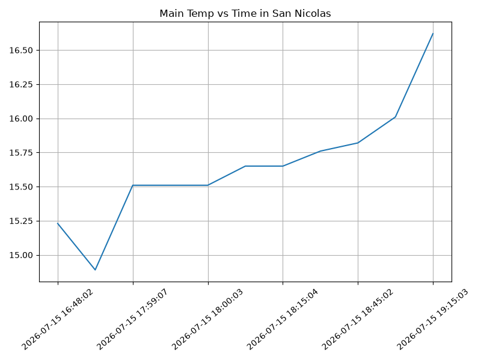
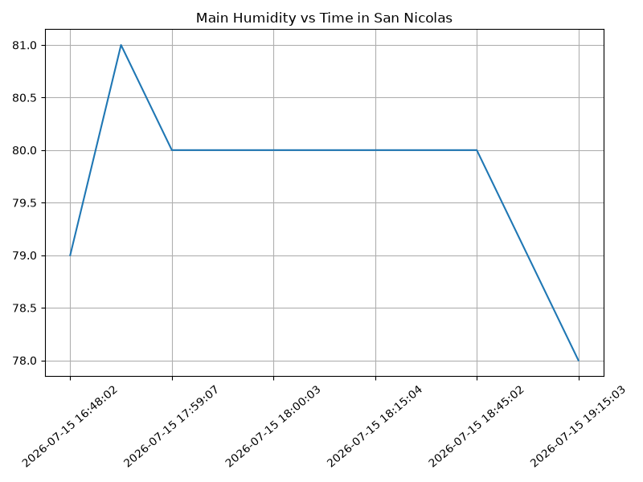
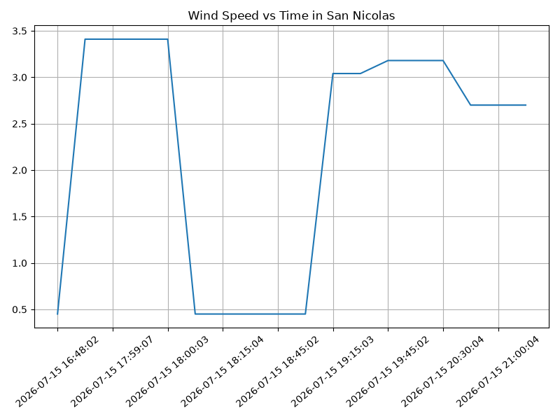

Proyecto ICCD332 Arquitectura de Computadores
Índice
- 1. City Weather APP
- 2. Índice de Secciones del Proyecto
- 3. Presentación de resultados
- 4. Sección: Buenos Aires Weather
- 5. Sección: Conversión a IEEE 754
- 6. Sección: Analisis de Robos Unidades Económicas
- 7. Referencias
- 7.1. Limpieza y Procesamiento de Datos
- 7.2. Análisis de Datos
- 7.3. Gráficas Estadísticas
- 7.4. 1. Introducción Teórica
- 7.5. 2. Estructura Matemática y Limitaciones
- 7.6. 3. Pasos Lógicos de Resolución (Ej: -248.75)
- 7.7. 4. Lógica e Implementación Interactiva en Python
- 7.8. 5. Demostración de Funcionalidad
- 7.9. 6. Conversor Interactivo (Frontend)
- 7.10. Datos del clima en Buenos Aires
1. City Weather APP
Este es el proyecto de fin de semestre en donde se pretende demostrar las destrezas obtenidas durante el transcurso de la asignatura de Arquitectura de Computadores.
- Conocimientos de sistema operativo Linux
- Conocimientos de Emacs/Jupyter
- Configuración de Entorno para Data Science con Mamba/Anaconda
- Literate Programming
2. Índice de Secciones del Proyecto
2.1. Estructura del proyecto
nSe recomienda que el proyecto se cree en el home del sistema operativo i.e. home/<user>. Allí se creará la carpeta CityWeather
mkdir BuenosAiresWeather cd BuenosAiresWeather pwd
/home/sebaszun-epn/BuenosAiresWeather
El proyecto ha de tener los siguientes archivos y subdirectorios. Adaptar los nombres de los archivos según las ciudades específicas del grupo.
.
├── CityTemperatureAnalysis.ipynb
├── clima-quito-hoy.csv
├── get-weather.sh
├── main.py
├── output.log
└── weather-site
├── build-site.el
├── build.sh
├── content
│ ├── images
│ │ ├── plot.png
│ │ └── temperature.png
│ ├── index.org
│ └── index.org_archive
└── public
├── images
│ ├── plot.png
│ └── temperature.png
├── index.html
5 directories, 18 files
Puede usar Emacs para la creación de la estructura de su proyecto
usando comandos desde el bloque de shell. Recuerde ejecutar el bloque
con C-c C-c. Para insertar un bloque nuevo utilice C-c C-, o M-x
org-insert-structure-template. Seleccione la opción s para src y
adapte el bloque según su código tenga un comandos de shell, código de
Python o de Java. En este documento .org dispone de varios ejemplos
funcionales para escribir y presentar el código.
pwd cd BuenosAiresWeather mkdir weather-site cd weather-site mkdir content cd content mkdir images cd .. mkdir public cd public mkdir images cd .. cd .. tree
/home/sebaszun-epn
.
└── weather-site
├── content
│ └── images
└── public
└── images
6 directories, 0 files
Una vez realizadas las demás secciones del presente proyecto, se procedió a actualizar la organización de los direcctorios
pwd cd ~/BuenosAiresWeather/ cp build.* ~/BuenosAiresWeather/weather-site/ cp -r ~/BuenosAiresWeather/weather-site/content/images/ ~/BuenosAiresWeather/weather-site/public/
2.2. Formulación del Problema
Se desea realizar un registro climatológico de una ciudad \(\mathcal{C}\). Para esto, escriba un script de Python/Java que permita obtener datos climatológicos desde el API de openweathermap. El API hace uso de los valores de latitud \(x\) y longitud \(y\) de la ciudad \(\mathcal{C}\) para devolver los valores actuales a un tiempo \(t\).
Los resultados obtenidos de la consulta al API se escriben en un archivo clima-<ciudad>-hoy.csv. Cada ejecución del script debe almacenar nuevos datos en el archivo. Utilice crontab y sus conocimientos de Linux y Programación para obtener datos del API de openweathermap con una periodicidad de 15 minutos mediante la ejecución de un archivo ejecutable denominado get-weather.sh. Obtenga al menos 50 datos. Verifique los resultados. Todas las operaciones se realizan en Linux o en el WSL. Las etapas del problema se subdividen en:
- Conformar los grupos de 2 estudiantes y definir la ciudad objeto de estudio.
- Crear su API gratuito en openweathermap
- Escribir un script en Python/Java que realice la consulta al API y escriba los resultados en clima-<ciudad>-hoy.csv. El archivo ha de contener toda la información que se obtiene del API en columnas. Se debe observar que los datos sobre lluvia (rain) y nieve (snow) se dan a veces si existe el fenómeno.
Desarrollar un ejecutable get-weather.sh para ejecutar el programa Python/Java.1
- Configurar Crontab para la adquisición de datos. Escriba el comando configurado. Respalde la ejecución de crontab en un archivo output.log
Realizar la presentación del Trabajo utilizando la generación del sitio web por medio de Emacs. Para esto es necesario crear la carpeta weather-site dentro del proyecto. Puede ajustar el look and feel según sus preferencias. El servidor a usar es el simple-httpd integrado en Emacs que debe ser instalado:
- Usando comandos Emacs:
M-x package-installpresionamos enter (i.e. RET) y escribimos el nombre del paquete: simple-httpd - Configurando el archivo init.el
(package-install 'simple-httpd) (use-package simple-httpd :ensure t) (package-installed-p 'simple-httpd)
Instrucciones de sobre la creación del sitio web se tiene en el vídeo de instrucciones y en el archivo Org-Website.org en el GitHub del curso
- Usando comandos Emacs:
- Su código debe estar respaldado en GitHub/BitBucket, la dirección será remitida en la contestación de la tarea
2.3. Descripción del código
En esta sección se detalla la estrategia de solución adoptada para el procesamiento dinámico y almacenamiento del clima de Buenos Aires.
2.3.1. Lectura del API
Para obtener los datos climáticos de Buenos Aires en tiempo real, se
realiza una petición HTTP GET utilizando la librería requests,
consultando el endpoint de OpenWeatherMap con parámetros de latitud y
longitud configurados para unidades métricas (°C y m/s).
import requests API_KEY = "62d2107136670bd7f62c2c23cea30130" LAT = -34.6037 LON = -58.3816 URL = f"https://api.openweathermap.org/data/2.5/weather?lat={LAT}&lon={LON}&appid={API_KEY}&units=metric" response = requests.get(URL) print(response.status_code)
200
2.3.2. Convertir Json a Diccionario de Python (Normalización)
La respuesta que nos da la API viene en un formato llamado JSON y la
convierte en en una tabla limpia usando la librería Pandas. Además, se
agrega una columna con la fecha y hora exacta de la consulta (dt)
para saber exactamente cuándo se tomaron los datos.
import pandas as pd from datetime import datetime data = response.json() df_new = pd.json_normalize(data) df_new['dt'] = datetime.now().strftime('%Y-%m-%d %H:%M:%S') print(df_new[['name', 'main.temp', 'dt']].to_string(index=False))
2.3.3. Guardar el archivo csv
Para asegurarnos de que el programa no falle si faltan datos (como cuando no está lloviendo), el script primero revisa si el archivo CSV ya existe en la carpeta. Si el archivo ya está creado, lo abre y le pega los datos nuevos al final para no borrar lo que guardaron tus compañeros[cite: 2]. Si el archivo no existe, lo crea por primera vez.
import os csv_path = 'clima-buenosaires-hoy.csv' if os.path.exists(csv_path): df_existing = pd.read_csv(csv_path) df_all = pd.concat([df_existing, df_new], ignore_index=True) df_all.to_csv(csv_path, index=False) else: df_new.to_csv(csv_path, index=False) print("CSV actualizado con éxito.")
2.4. Script ejecutable sh
Se coloca el contenido del script ejecutable. Para evitar fallos con
el comando source en la terminal, se utiliza el intérprete de
comandos /bin/bash en lugar de sh estándar. Además, se definieron
rutas relativas a la carpeta personal del usuario (~/) para asegurar
que el script se ejecute correctamente en el sistema de cualquier
miembro del grupo.
El archivo ejecutable get-weather.sh contiene la siguiente
estructura para cargar de forma segura el entorno de
anaconda/mamba denominado iccd332:
#!/bin/bash # Cargar conda de forma segura usando el home genérico (~/) if [ -f ~/miniforge3/etc/profile.d/conda.sh ]; then source ~/miniforge3/etc/profile.d/conda.sh elif [ -f ~/miniconda3/etc/profile.d/conda.sh ]; then source ~/miniconda3/etc/profile.d/conda.sh elif [ -f ~/anaconda3/etc/profile.d/conda.sh ]; then source ~/anaconda3/etc/profile.d/conda.sh fi # Activar el entorno de la materia conda activate iccd332 # Moverse a la carpeta del proyecto y ejecutar cd ~/BuenosAiresWeather python main.py
Finalmente, se convierte en ejecutable dándole permisos de lectura y ejecución en el sistema operativo:
chmod +x get-weather.sh
En el caso de los shell script se puede usar `which sh` para conocer la ubicación del ejecutable
which sh
/usr/bin/sh
De igual manera se requiere localizar el entorno de mamba iccd332 que será utilizado
which mamba
/home/leningfe/miniforge3/condabin/mamba
Con esto el archivo ejecutable a de tener (adapte el código según las condiciones de su máquina):
#!/usr/bin/sh source /home/<user>/miniforge3/etc/profile.d/conda.sh eval "$(conda shell.bash hook)" conda activate iccd332 Python main.py
Finalmente convierta en ejecutable como se explicó en clases y laboratorio
#!/usr/bin/sh Poner comando/s aquí
2.5. Configuración de Crontab
Se indica la configuración realizada en crontab para la adquisición de datos de manera automática cada 15 minutos:
*/15 * * * * cd ~/BuenosAiresWeather && ./get-weather.sh >> output.log 2>&1
- Recuerde remplazar <City> por el nombre de la ciudad que analice
- Recuerde ajustar el tiempo para potenciar tomar datos nuevos
- Recuerde que
2>&1permite guardar enoutput.logtanto la salida del programa como los errores en la ejecución.
3. Presentación de resultados
Para la pressentación de resultados se utilizan las librerías de Python:
- matplotlib
- pandas
Alternativamente como pudo estudiar en el Jupyter Notebook
CityTemperatureAnalysis.ipynb, existen librerías alternativas que se
pueden utilizar para presentar los resultados gráficos. En ambos
casos, para que funcione los siguientes bloques de código, es
necesario que realice la instalación de los paquetes usando mamba
install <nombre-paquete>
3.1. Muestra Aleatoria de datos
Se presenta una muestra de 10 valores aleatorios de los datos obtenidos.
import os import pandas as pd # lectura del archivo csv obtenido df = pd.read_csv('/home/stevenech/BuenosAiresWeather/clima-buenosaires-hoy.csv') # se imprime la estructura del dataframe en forma de filas x columnas print(df.shape)
Resultado del número de filas y columnas leídos del archivo csv
table1 = df.sample(10) table = [list(table1)]+[None]+table1.values.tolist()
| weather | base | visibility | dt | timezone | id | name | cod | coord.lon | coord.lat | main.temp | main.feelslike | main.tempmin | main.tempmax | main.pressure | main.humidity | main.sealevel | main.grndlevel | wind.speed | wind.deg | wind.gust | clouds.all | sys.type | sys.id | sys.country | sys.sunrise | sys.sunset |
|---|---|---|---|---|---|---|---|---|---|---|---|---|---|---|---|---|---|---|---|---|---|---|---|---|---|---|
| [{'id': 804, 'main': 'Clouds', 'description': 'overcast clouds', 'icon': '04n'}] | stations | 10000 | 2026-07-15 17:57:05 | -10800 | 6693229 | San Nicolas | 200 | -58.3816 | -34.6037 | 14.89 | 14.55 | 14.37 | 15.53 | 1009 | 81 | 1009 | 1008 | 3.41 | 45 | 7.87 | 100 | 2 | 2008409 | AR | 1784113074 | 1784149239 |
| [{'id': 804, 'main': 'Clouds', 'description': 'overcast clouds', 'icon': '04n'}] | stations | 10000 | 2026-07-15 17:59:07 | -10800 | 6693229 | San Nicolas | 200 | -58.3816 | -34.6037 | 15.51 | 15.21 | 14.37 | 16.61 | 1009 | 80 | 1009 | 1008 | 3.41 | 45 | 7.87 | 100 | 2 | 2031595 | AR | 1784113074 | 1784149239 |
| [{'id': 804, 'main': 'Clouds', 'description': 'overcast clouds', 'icon': '04n'}] | stations | 10000 | 2026-07-15 19:00:03 | -10800 | 6693229 | San Nicolas | 200 | -58.3816 | -34.6037 | 16.01 | 15.73 | 14.93 | 16.61 | 1009 | 79 | 1009 | 1008 | 0.45 | 45 | 1.79 | 100 | 2 | 2031595 | AR | 1784113074 | 1784149239 |
| [{'id': 804, 'main': 'Clouds', 'description': 'overcast clouds', 'icon': '04n'}] | stations | 10000 | 2026-07-15 18:30:03 | -10800 | 6693229 | San Nicolas | 200 | -58.3816 | -34.6037 | 15.76 | 15.48 | 14.37 | 16.61 | 1009 | 80 | 1009 | 1008 | 0.45 | 45 | 1.79 | 100 | 2 | 2031595 | AR | 1784113074 | 1784149239 |
| [{'id': 804, 'main': 'Clouds', 'description': 'overcast clouds', 'icon': '04n'}] | stations | 10000 | 2026-07-15 18:45:02 | -10800 | 6693229 | San Nicolas | 200 | -58.3816 | -34.6037 | 15.82 | 15.55 | 14.88 | 16.61 | 1009 | 80 | 1009 | 1008 | 0.45 | 45 | 1.79 | 100 | 2 | 2031595 | AR | 1784113074 | 1784149239 |
| [{'id': 804, 'main': 'Clouds', 'description': 'overcast clouds', 'icon': '04n'}] | stations | 10000 | 2026-07-15 16:48:02 | -10800 | 6693229 | San Nicolas | 200 | -58.3816 | -34.6037 | 15.23 | 14.87 | 13.82 | 16.05 | 1008 | 79 | 1008 | 1007 | 0.45 | 23 | 0.89 | 100 | 2 | 2031595 | AR | 1784113074 | 1784149239 |
| [{'id': 804, 'main': 'Clouds', 'description': 'overcast clouds', 'icon': '04n'}] | stations | 10000 | 2026-07-15 17:59:41 | -10800 | 6693229 | San Nicolas | 200 | -58.3816 | -34.6037 | 15.51 | 15.21 | 14.37 | 16.61 | 1009 | 80 | 1009 | 1008 | 3.41 | 45 | 7.87 | 100 | 2 | 2031595 | AR | 1784113074 | 1784149239 |
| [{'id': 804, 'main': 'Clouds', 'description': 'overcast clouds', 'icon': '04n'}] | stations | 10000 | 2026-07-15 18:07:18 | -10800 | 6693229 | San Nicolas | 200 | -58.3816 | -34.6037 | 15.65 | 15.36 | 14.37 | 16.61 | 1009 | 80 | 1009 | 1008 | 0.45 | 23 | 0.89 | 100 | 2 | 2031595 | AR | 1784113074 | 1784149239 |
| [{'id': 804, 'main': 'Clouds', 'description': 'overcast clouds', 'icon': '04n'}] | stations | 10000 | 2026-07-15 18:15:04 | -10800 | 6693229 | San Nicolas | 200 | -58.3816 | -34.6037 | 15.65 | 15.36 | 14.37 | 16.61 | 1009 | 80 | 1009 | 1008 | 0.45 | 23 | 0.89 | 100 | 2 | 2031595 | AR | 1784113074 | 1784149239 |
| [{'id': 804, 'main': 'Clouds', 'description': 'overcast clouds', 'icon': '04n'}] | stations | 10000 | 2026-07-15 18:00:03 | -10800 | 6693229 | San Nicolas | 200 | -58.3816 | -34.6037 | 15.51 | 15.21 | 14.37 | 16.61 | 1009 | 80 | 1009 | 1008 | 3.41 | 45 | 7.87 | 100 | 2 | 2031595 | AR | 1784113074 | 1784149239 |
3.2. Gráfica Temperatura vs Tiempo
import matplotlib.pyplot as plt import matplotlib.dates as mdates # Define el tamaño de la figura de salida fig = plt.figure(figsize=(8,6)) plt.plot(df['dt'], df['main.temp']) # dibuja las variables dt y temperatura # ajuste para presentacion de fechas en la imagen plt.gca().xaxis.set_major_locator(mdates.DayLocator(interval=2)) # plt.gca().xaxis.set_major_formatter(mdates.DateFormatter('%Y-%m-%d')) plt.grid() # Titulo que obtiene el nombre de la ciudad del DataFrame plt.title(f'Main Temp vs Time in {next(iter(set(df.name)))}') plt.xticks(rotation=40) # rotación de las etiquetas 40° fig.tight_layout() fname = './images/temperature.png' plt.savefig(fname) fname

Figura 1: Gráfica Temperatura vs Tiempo
3.3. Gráfica Humedad vs Tiempo
import matplotlib.pyplot as plt import matplotlib.dates as mdates # Define el tamaño de la figura de salida fig = plt.figure(figsize=(8,6)) plt.plot(df['dt'], df['main.humidity']) # dibuja las variables dt y humedad # ajuste para presentacion de fechas en la imagen plt.gca().xaxis.set_major_locator(mdates.DayLocator(interval=2)) # plt.gca().xaxis.set_major_formatter(mdates.DateFormatter('%Y-%m-%d')) plt.grid() # Titulo que obtiene el nombre de la ciudad del DataFrame plt.title(f'Main Humidity vs Time in {next(iter(set(df.name)))}') plt.xticks(rotation=40) # rotación de las etiquetas 40° fig.tight_layout() fname = './images/humidity.png' plt.savefig(fname) fname

3.4. Gráfica Velocidad del Viento vs Tiempo
import matplotlib.pyplot as plt import matplotlib.dates as mdates # Define el tamaño de la figura de salida fig = plt.figure(figsize=(8,6)) plt.plot(df['dt'], df['wind.speed']) # dibuja las variables dt y velocidad del viento # ajuste para presentacion de fechas en la imagen plt.gca().xaxis.set_major_locator(mdates.DayLocator(interval=2)) # plt.gca().xaxis.set_major_formatter(mdates.DateFormatter('%Y-%m-%d')) plt.grid() # Titulo que obtiene el nombre de la ciudad del DataFrame plt.title(f'Wind Speed vs Time in {next(iter(set(df.name)))}') plt.xticks(rotation=40) # rotación de las etiquetas 40° fig.tight_layout() fname = './images/wind_speed.png' plt.savefig(fname) fname

Debido a que el archivo index.org se abre dentro de la carpeta
content, y en cambio el servidor http de emacs se ejecuta desde la
carpeta public es necesario copiar el archivo a la ubicación
equivalente en /public/images
cp -rfv ./images/* ~/BuenosAiresWeather/weather-site/public/images
4. Sección: Buenos Aires Weather
5. Sección: Conversión a IEEE 754
6. Sección: Analisis de Robos Unidades Económicas
7. Referencias
Notas al pie de página:
Recuerde que su máquina ha de disponer de un entorno de anaconda/mamba denominado iccd332 en el cual se dispone del interprete de Python